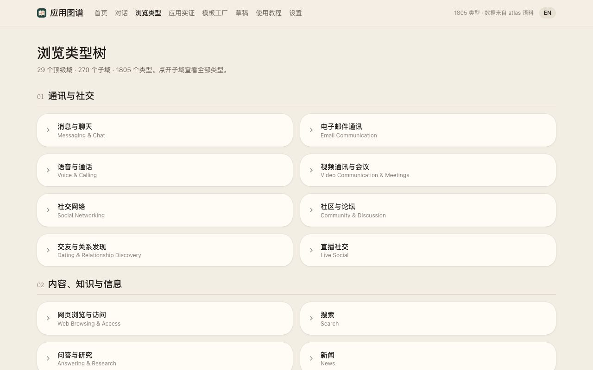
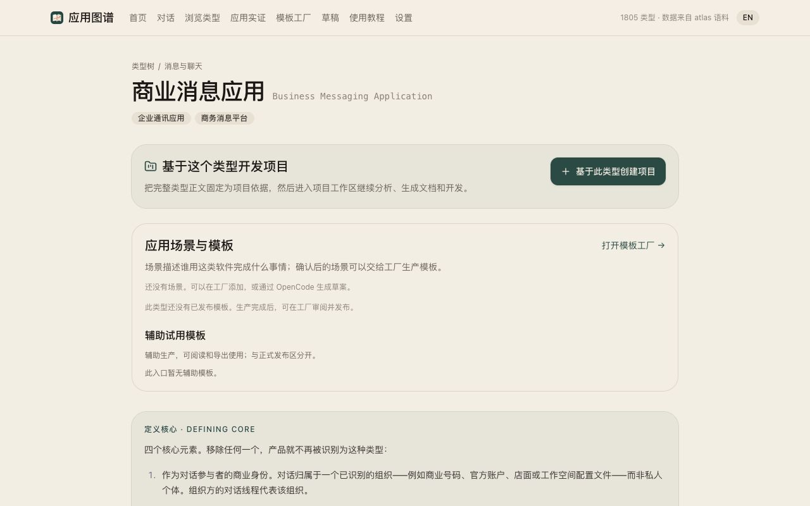

A library and local workbench covering 1,805 software types across 29 top-level domains.
About
The English entries are the source of truth, backed by research notes, a category tree and persisted translations. On top sits a template factory that exports a standard development pack from a scenario template, hands it to an AI to implement, and verifies the browser journeys.
Features
- 1,805 types, 29 domains, 270 directory nodes, 33 product instances
- Formal English entries with matching research notes and boundaries
- Local drafts API and a React workbench
- Template factory with trial scenarios such as bookmarks, personal budget and meeting notes
Demo
Screenshots

